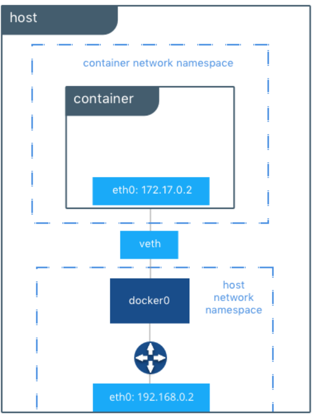
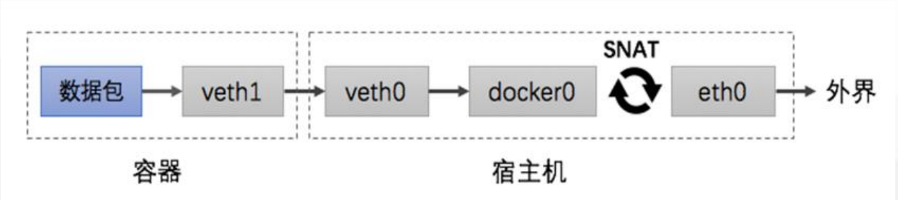
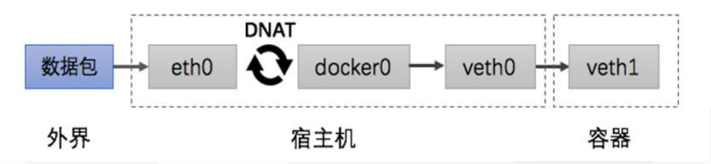

容器网络
1. 网络模式¶
| 定义 | 描述 |
|---|---|
| bridge | –net=bridge，默认网络，Docker启动后创建一个docker0网桥，默认创建的容器也是添加到这个网桥中。 |
| host | -net=host,容器不会获得一个独立的network namespace，而是与宿主机共用一个。这就意味着容器不会有自己的网卡信息，而是使用宿主机的。容器除了网络，其他都是隔离的。 |
| none | -net=none,获取独立的network namespace，但不为容器进行任何网络配置，需要我们手动配置。 |
| container | -net=container:Name/ID,与指定的容器使用同一个network namespace，具有同样的网络配置信息，两个容器除了网络，其他都还是隔离的。 |
| 自定义网络 | 与默认的bridge原理一样，但自定义网络具备内部DNS发现，可以通过容器名或者主机名容器之间网络通信。 |
1.1 bridge¶
docker的默认使用bridge。当Docker进程启动时，会在主机上创建一个名为docker0的虚拟网桥，此主机上启动的Docker容器会连接到这个虚拟网桥上。虚拟网桥的工作方式和物理交换机类似，这样主机上的所有容器就通过交换机连在了一个二层网络中。
d从docker0子网中分配一个IP给容器使用，并设置docker0的IP地址为容器的默认网关。在主机上创建一对虚拟网卡veth pair设备，Docker将veth pair设备的一端放在新创建的容器中，并命名为eth0（容器的网卡），另一端放在主机中，以vethxxx这样类似的名字命名，并将这个网络设备加入到docker0网桥中。可以通过brctl show命令查看。
dbridge模式是docker的默认网络模式，不写--net参数，就是bridge模式。使用docker run -p时，docker实际是在iptables做了DNAT规则，实现端口转发功能。可以使用iptables -t nat -vnL查看。

docker run -tid --net=bridge --name docker_bri1 nginx docker run -tid --net=bridge --name docker_bri2 nginx brctl show docker exec -ti docker_bri1 /bin/bash docker exec -ti docker_bri1 /bin/bash ifconfig –a route –n
操作
[root@localhost ~]# ifconfig
docker0: flags=4099<UP,BROADCAST,MULTICAST> mtu 1500
inet 172.17.0.1 netmask 255.255.0.0 broadcast 172.17.255.255
inet6 fe80::42:8aff:febb:5880 prefixlen 64 scopeid 0x20<link>
ether 02:42:8a:bb:58:80 txqueuelen 0 (Ethernet)
RX packets 57 bytes 7304 (7.1 KiB)
RX errors 0 dropped 0 overruns 0 frame 0
TX packets 81 bytes 5746 (5.6 KiB)
TX errors 0 dropped 0 overruns 0 carrier 0 collisions 0
ens33: flags=4163<UP,BROADCAST,RUNNING,MULTICAST> mtu 1500
inet 192.168.186.139 netmask 255.255.255.0 broadcast 192.168.186.255
inet6 fe80::7bc6:bc62:db29:8a1b prefixlen 64 scopeid 0x20<link>
ether 00:0c:29:94:bd:ca txqueuelen 1000 (Ethernet)
RX packets 407793 bytes 562312090 (536.2 MiB)
RX errors 0 dropped 0 overruns 0 frame 0
TX packets 128762 bytes 8661406 (8.2 MiB)
TX errors 0 dropped 0 overruns 0 carrier 0 collisions 0
lo: flags=73<UP,LOOPBACK,RUNNING> mtu 65536
inet 127.0.0.1 netmask 255.0.0.0
inet6 ::1 prefixlen 128 scopeid 0x10<host>
loop txqueuelen 1000 (Local Loopback)
RX packets 408 bytes 29445 (28.7 KiB)
RX errors 0 dropped 0 overruns 0 frame 0
TX packets 408 bytes 29445 (28.7 KiB)
TX errors 0 dropped 0 overruns 0 carrier 0 collisions 0
[root@localhost ~]# docker run -tid --net=bridge --name docker_bri1 nginx
9bcd1b5593257439bcc7cec9a23b6578bbbd60a003cad55bab764472259d181a
[root@localhost ~]# docker run -tid --net=bridge --name docker_bri2 nginx
3a9321502e283f0855deff50bf9abf279cbf02cd2712853af50cfb88a26dddeb
[root@localhost ~]# ifconfig
docker0: flags=4163<UP,BROADCAST,RUNNING,MULTICAST> mtu 1500
inet 172.17.0.1 netmask 255.255.0.0 broadcast 172.17.255.255
inet6 fe80::42:8aff:febb:5880 prefixlen 64 scopeid 0x20<link>
ether 02:42:8a:bb:58:80 txqueuelen 0 (Ethernet)
RX packets 57 bytes 7304 (7.1 KiB)
RX errors 0 dropped 0 overruns 0 frame 0
TX packets 81 bytes 5746 (5.6 KiB)
TX errors 0 dropped 0 overruns 0 carrier 0 collisions 0
ens33: flags=4163<UP,BROADCAST,RUNNING,MULTICAST> mtu 1500
inet 192.168.186.139 netmask 255.255.255.0 broadcast 192.168.186.255
inet6 fe80::7bc6:bc62:db29:8a1b prefixlen 64 scopeid 0x20<link>
ether 00:0c:29:94:bd:ca txqueuelen 1000 (Ethernet)
RX packets 407848 bytes 562316300 (536.2 MiB)
RX errors 0 dropped 0 overruns 0 frame 0
TX packets 128789 bytes 8666068 (8.2 MiB)
TX errors 0 dropped 0 overruns 0 carrier 0 collisions 0
lo: flags=73<UP,LOOPBACK,RUNNING> mtu 65536
inet 127.0.0.1 netmask 255.0.0.0
inet6 ::1 prefixlen 128 scopeid 0x10<host>
loop txqueuelen 1000 (Local Loopback)
RX packets 408 bytes 29445 (28.7 KiB)
RX errors 0 dropped 0 overruns 0 frame 0
TX packets 408 bytes 29445 (28.7 KiB)
TX errors 0 dropped 0 overruns 0 carrier 0 collisions 0
veth46caa6b: flags=4163<UP,BROADCAST,RUNNING,MULTICAST> mtu 1500
inet6 fe80::1897:a4ff:feeb:d0bf prefixlen 64 scopeid 0x20<link>
ether 1a:97:a4:eb:d0:bf txqueuelen 0 (Ethernet)
RX packets 0 bytes 0 (0.0 B)
RX errors 0 dropped 0 overruns 0 frame 0
TX packets 8 bytes 656 (656.0 B)
TX errors 0 dropped 0 overruns 0 carrier 0 collisions 0
vetha2c7d51: flags=4163<UP,BROADCAST,RUNNING,MULTICAST> mtu 1500
inet6 fe80::fc50:59ff:fe52:3738 prefixlen 64 scopeid 0x20<link>
ether fe:50:59:52:37:38 txqueuelen 0 (Ethernet)
RX packets 0 bytes 0 (0.0 B)
RX errors 0 dropped 0 overruns 0 frame 0
TX packets 8 bytes 656 (656.0 B)
TX errors 0 dropped 0 overruns 0 carrier 0 collisions 0
[root@localhost ~]# route -n
Kernel IP routing table
Destination Gateway Genmask Flags Metric Ref Use Iface
0.0.0.0 192.168.186.2 0.0.0.0 UG 100 0 0 ens33
172.17.0.0 0.0.0.0 255.255.0.0 U 0 0 0 docker0
192.168.186.0 0.0.0.0 255.255.255.0 U 100 0 0 ens33
可见启动了两个虚拟机网卡
1.2 host¶
如果启动容器的时候使用host模式，那么这个容器将不会获得一个独立的Network Namespace，而是和宿主机共用一个Network Namespace。容器将不会虚拟出自己的网卡，配置自己的IP等，而是使用宿主机的IP和端口。但是，容器的其他方面，如文件系统、进程列表等还是和宿主机隔离的。Host模式如下图所示：

docker run -itd --net=host busybox docker exec -it 容器id ifconfig
操作
[root@localhost ~]# docker run -itd --net=host busybox
7d0549a3e1aa4b60263adf72144d91a5aaa6694bc813ed0a51deb4874c2b8282
[root@localhost ~]# docker exec -it 7d0549a3e1 ifconfig
docker0 Link encap:Ethernet HWaddr 02:42:8A:BB:58:80
inet addr:172.17.0.1 Bcast:172.17.255.255 Mask:255.255.0.0
inet6 addr: fe80::42:8aff:febb:5880/64 Scope:Link
UP BROADCAST RUNNING MULTICAST MTU:1500 Metric:1
RX packets:57 errors:0 dropped:0 overruns:0 frame:0
TX packets:81 errors:0 dropped:0 overruns:0 carrier:0
collisions:0 txqueuelen:0
RX bytes:7304 (7.1 KiB) TX bytes:5746 (5.6 KiB)
ens33 Link encap:Ethernet HWaddr 00:0C:29:94:BD:CA
inet addr:192.168.186.139 Bcast:192.168.186.255 Mask:255.255.255.0
inet6 addr: fe80::7bc6:bc62:db29:8a1b/64 Scope:Link
UP BROADCAST RUNNING MULTICAST MTU:1500 Metric:1
RX packets:409454 errors:0 dropped:0 overruns:0 frame:0
TX packets:129573 errors:0 dropped:0 overruns:0 carrier:0
collisions:0 txqueuelen:1000
RX bytes:563238476 (537.1 MiB) TX bytes:8758019 (8.3 MiB)
lo Link encap:Local Loopback
inet addr:127.0.0.1 Mask:255.0.0.0
inet6 addr: ::1/128 Scope:Host
UP LOOPBACK RUNNING MTU:65536 Metric:1
RX packets:412 errors:0 dropped:0 overruns:0 frame:0
TX packets:412 errors:0 dropped:0 overruns:0 carrier:0
collisions:0 txqueuelen:1000
RX bytes:29661 (28.9 KiB) TX bytes:29661 (28.9 KiB)
veth46caa6b Link encap:Ethernet HWaddr 1A:97:A4:EB:D0:BF
inet6 addr: fe80::1897:a4ff:feeb:d0bf/64 Scope:Link
UP BROADCAST RUNNING MULTICAST MTU:1500 Metric:1
RX packets:0 errors:0 dropped:0 overruns:0 frame:0
TX packets:8 errors:0 dropped:0 overruns:0 carrier:0
collisions:0 txqueuelen:0
RX bytes:0 (0.0 B) TX bytes:656 (656.0 B)
vetha2c7d51 Link encap:Ethernet HWaddr FE:50:59:52:37:38
inet6 addr: fe80::fc50:59ff:fe52:3738/64 Scope:Link
UP BROADCAST RUNNING MULTICAST MTU:1500 Metric:1
RX packets:0 errors:0 dropped:0 overruns:0 frame:0
TX packets:8 errors:0 dropped:0 overruns:0 carrier:0
collisions:0 txqueuelen:0
RX bytes:0 (0.0 B) TX bytes:656 (656.0 B)
可见容器内的网络是使用了宿主机的网络，没有再次创建docker的私有网络。
1.3 container¶
这个模式指定新创建的容器和已经存在的一个容器共享一个 Network Namespace，而不是和宿主机共享。新创建的容器不会创建自己的网卡，配置自己的 IP，而是和一个指定的容器共享 IP、端口范围等。同样，两个容器除了网络方面，其他的如文件系统、进程列表等还是隔离的。两个容器的进程可以通过 lo 网卡设备通信。

docker run -itd --name cmz busybox docker run -tid --net=container:cmz --name docker_con1 busybox
两个docker容器，使用一个网络
操作
[root@localhost ~]# docker rm -f $(docker ps -a |awk '{print $1}')
925479e72c73
0c51527887a3
Error: No such container: CONTAINER
[root@localhost ~]# docker run -itd --name cmz busybox
b1c62a22bfc9db38b69d234b0ba0745dd7a0a206b47e6420e442547990026162
[root@localhost ~]# docker ps -l
CONTAINER ID IMAGE COMMAND CREATED STATUS PORTS NAMES
b1c62a22bfc9 busybox "sh" 5 seconds ago Up 4 seconds cmz
[root@localhost ~]# docker run -tid --net=container:cmz --name docker_con1 busybox
b74c16e949a9fa6cf17d5a05ab950db2440bbc0a874ab15657bdad70a1077981
[root@localhost ~]# docker ps -l
CONTAINER ID IMAGE COMMAND CREATED STATUS PORTS NAMES
b74c16e949a9 busybox "sh" 4 seconds ago Up 3 seconds docker_con1
[root@localhost ~]# docker exec -it b1c62a22bfc9 ifconfig
eth0 Link encap:Ethernet HWaddr 02:42:AC:11:00:02
inet addr:172.17.0.2 Bcast:172.17.255.255 Mask:255.255.0.0
UP BROADCAST RUNNING MULTICAST MTU:1500 Metric:1
RX packets:8 errors:0 dropped:0 overruns:0 frame:0
TX packets:0 errors:0 dropped:0 overruns:0 carrier:0
collisions:0 txqueuelen:0
RX bytes:656 (656.0 B) TX bytes:0 (0.0 B)
lo Link encap:Local Loopback
inet addr:127.0.0.1 Mask:255.0.0.0
UP LOOPBACK RUNNING MTU:65536 Metric:1
RX packets:0 errors:0 dropped:0 overruns:0 frame:0
TX packets:0 errors:0 dropped:0 overruns:0 carrier:0
collisions:0 txqueuelen:1000
RX bytes:0 (0.0 B) TX bytes:0 (0.0 B)
[root@localhost ~]# docker exec -it b74c16e949a9 ifconfig
eth0 Link encap:Ethernet HWaddr 02:42:AC:11:00:02
inet addr:172.17.0.2 Bcast:172.17.255.255 Mask:255.255.0.0
UP BROADCAST RUNNING MULTICAST MTU:1500 Metric:1
RX packets:8 errors:0 dropped:0 overruns:0 frame:0
TX packets:0 errors:0 dropped:0 overruns:0 carrier:0
collisions:0 txqueuelen:0
RX bytes:656 (656.0 B) TX bytes:0 (0.0 B)
lo Link encap:Local Loopback
inet addr:127.0.0.1 Mask:255.0.0.0
UP LOOPBACK RUNNING MTU:65536 Metric:1
RX packets:0 errors:0 dropped:0 overruns:0 frame:0
TX packets:0 errors:0 dropped:0 overruns:0 carrier:0
collisions:0 txqueuelen:1000
RX bytes:0 (0.0 B) TX bytes:0 (0.0 B)
1.3 none¶
使用none模式，Docker容器拥有自己的Network Namespace，但是，并不为Docker容器进行任何网络配置。也就是说，这个Docker容器没有网卡、IP、路由等信息。需要我们自己为Docker容器添加网卡、配置IP等。

docker run -tid --net=none --name docker_non1 busybox
操作
[root@localhost ~]# docker run -tid --net=none --name docker_non1 busybox
6340546f63b83fbfc3cddd5e52337dc4d567496a2b6ab504e29c049cb766da46
[root@localhost ~]# docker ps -l
CONTAINER ID IMAGE COMMAND CREATED STATUS PORTS NAMES
6340546f63b8 busybox "sh" 5 seconds ago Up 5 seconds docker_non1
[root@localhost ~]# docker exec -it 6340546f63b8 ifconfig
lo Link encap:Local Loopback
inet addr:127.0.0.1 Mask:255.0.0.0
UP LOOPBACK RUNNING MTU:65536 Metric:1
RX packets:0 errors:0 dropped:0 overruns:0 frame:0
TX packets:0 errors:0 dropped:0 overruns:0 carrier:0
collisions:0 txqueuelen:1000
RX bytes:0 (0.0 B) TX bytes:0 (0.0 B)
自定义网络
docker run -itd --name web busybox docker run -itd --name db busybox docker network create cmz_network docker run -itd --name web1 --net=cmz_network busybox docker run -itd --name db1 --net=cmz_network busybox docker exec -it web1 ping -c1 db1 docker exec -it db1 ping -c1 web1
操作
[root@localhost ~]# docker run -itd --name web busybox edf0be0c17e79a39db7b32a60d989ac3fbfe6d00491fb7308aa8c118fabb5b0c [root@localhost ~]# docker run -itd --name db busybox 35c3c0f6cce62c8148469505806e82e67bbe123cfc3ddd6ddca946b2d43a2183 [root@localhost ~]# docker exec -it web sh / # ping db ping: bad address 'db' / # [root@localhost ~]# docker exec -it db sh / # ping web ping: bad address 'web' / # [root@localhost ~]# [root@localhost ~]# docker network ls NETWORK ID NAME DRIVER SCOPE fded918d7084 bridge bridge local 7fb098cc4817 host host local bd86d4f496b9 none null local [root@localhost ~]# docker network create cmz_network e08426e96c48d072c108352f43fb88134e1e451fb40eddf1be541cb25f11ad66 [root@localhost ~]# docker network ls NETWORK ID NAME DRIVER SCOPE fded918d7084 bridge bridge local e08426e96c48 cmz_network bridge local 7fb098cc4817 host host local bd86d4f496b9 none null local [root@localhost ~]# docker run -itd --name web1 --net=cmz_network busybox 607659807fbdf5f07849e496218c0f4c5b8fc65211f21d5098498cbaa3d4fa16 [root@localhost ~]# docker run -itd --name db1 --net=cmz_network busybox 5ca91003c39e0157e416d0408d4f2a597e4eb009cde2c36e21dd56eda2b86dae [root@localhost ~]# docker exec -it web1 ping -c1 db1 PING db1 (172.18.0.3): 56 data bytes 64 bytes from 172.18.0.3: seq=0 ttl=64 time=0.121 ms --- db1 ping statistics --- 1 packets transmitted, 1 packets received, 0% packet loss round-trip min/avg/max = 0.121/0.121/0.121 ms [root@localhost ~]# docker exec -it db1 ping -c1 web1 PING web1 (172.18.0.2): 56 data bytes 64 bytes from 172.18.0.2: seq=0 ttl=64 time=0.047 ms --- web1 ping statistics --- 1 packets transmitted, 1 packets received, 0% packet loss round-trip min/avg/max = 0.047/0.047/0.047 ms 其实是hosts文件中解析 [root@localhost ~]# docker exec -it db1 cat /etc/hosts 127.0.0.1 localhost ::1 localhost ip6-localhost ip6-loopback fe00::0 ip6-localnet ff00::0 ip6-mcastprefix ff02::1 ip6-allnodes ff02::2 ip6-allrouters 172.18.0.3 5ca91003c39e [root@localhost ~]# docker exec -it web1 cat /etc/hosts 127.0.0.1 localhost ::1 localhost ip6-localhost ip6-loopback fe00::0 ip6-localnet ff00::0 ip6-mcastprefix ff02::1 ip6-allnodes ff02::2 ip6-allrouters 172.18.0.2 607659807fbd
查看新建网络信息
操作
[root@localhost ~]# docker network inspect cmz_network
[
{
"Name": "cmz_network",
"Id": "e08426e96c48d072c108352f43fb88134e1e451fb40eddf1be541cb25f11ad66",
"Created": "2019-04-15T01:44:55.96203805-04:00",
"Scope": "local",
"Driver": "bridge",
"EnableIPv6": false,
"IPAM": {
"Driver": "default",
"Options": {},
"Config": [
{
"Subnet": "172.18.0.0/16",
"Gateway": "172.18.0.1"
}
]
},
"Internal": false,
"Attachable": false,
"Ingress": false,
"ConfigFrom": {
"Network": ""
},
"ConfigOnly": false,
"Containers": {
"5ca91003c39e0157e416d0408d4f2a597e4eb009cde2c36e21dd56eda2b86dae": {
"Name": "db1",
"EndpointID": "a03f17674d25f6d701cc82bd55f56f2ddd8e7195366279c44de43e0df8ccbeec",
"MacAddress": "02:42:ac:12:00:03",
"IPv4Address": "172.18.0.3/16",
"IPv6Address": ""
},
"607659807fbdf5f07849e496218c0f4c5b8fc65211f21d5098498cbaa3d4fa16": {
"Name": "web1",
"EndpointID": "a9af22b7a1d8a3288e7d4905c2235ad6321ac01d07dc289e7c7c66b7ebaaff33",
"MacAddress": "02:42:ac:12:00:02",
"IPv4Address": "172.18.0.2/16",
"IPv6Address": ""
}
},
"Options": {},
"Labels": {}
}
]
2. 容器网络访问原理¶


